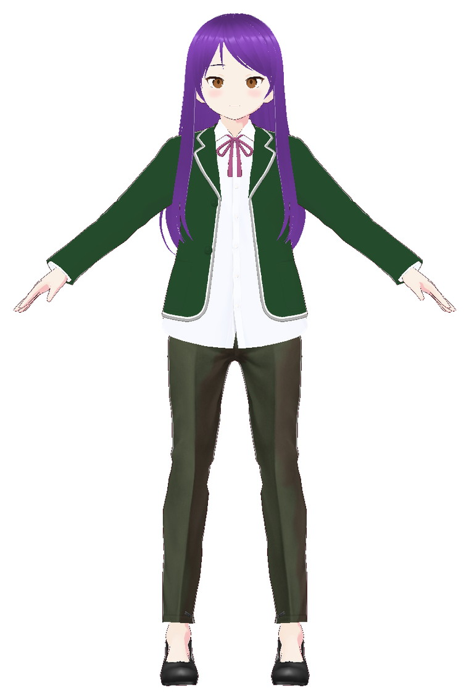
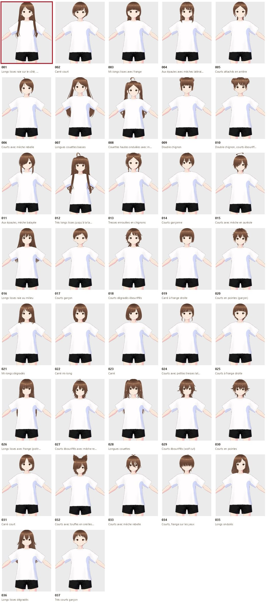
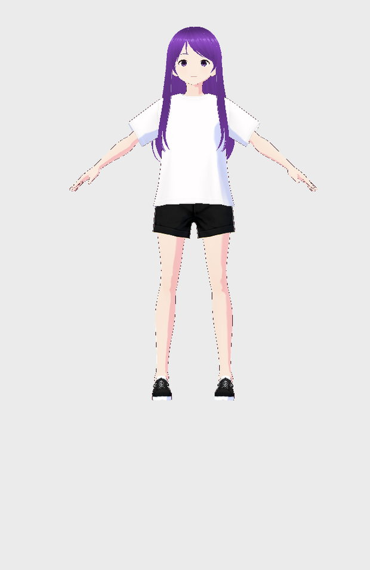
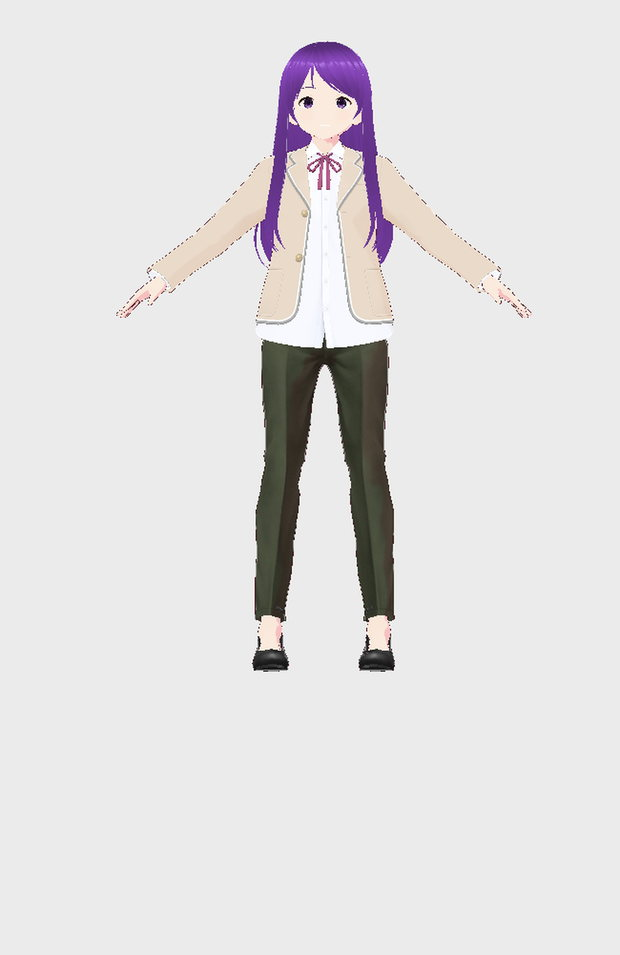
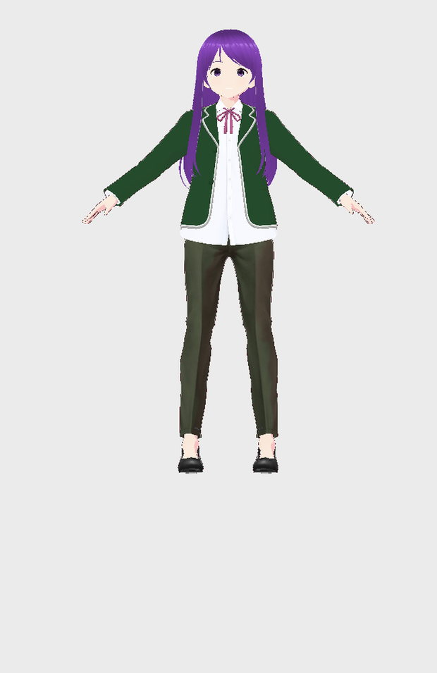
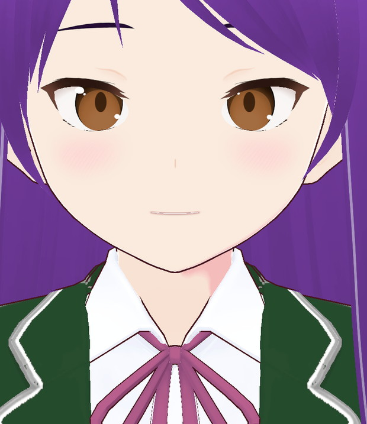
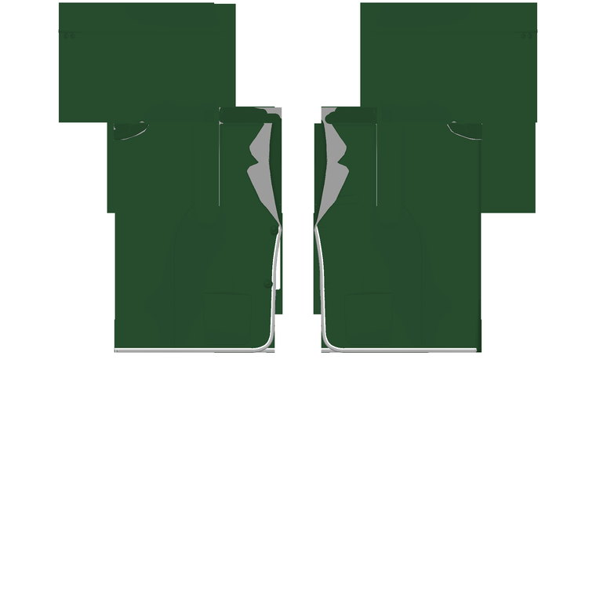

VRChat worlds
Populate a world with varied NPCs or avatar variants from one base model — same recipe, different presets, hair, colors and outfits.
Open source · Windows · VRoid 2.14
Build, dress, texture and export VRoid character variants from Claude — without clicking through the editor. Undoable, scriptable, and installed in minutes. Works with Claude Code, Claude Desktop, or any MCP client; no protocol knowledge required.

01Use cases
Three concrete ways to use the bridge. Each one starts from a base model and repeats a recipe, instead of rebuilding every variant by hand.
Populate a world with varied NPCs or avatar variants from one base model — same recipe, different presets, hair, colors and outfits.
Build a coherent cast from a character list: faces, hair, outfits and palettes, then export the VRM files.
Produce series of characters or outfits with repeatable recipes, instead of rebuilding every variant by hand.
02Batch example
A batch is just a recipe: choose a base, apply a preset, recolor a texture or material, then export. Replace the IDs and paths with your own.
vroid_batch operations=[
{"tool":"vroid_apply_preset","args":{"id":"<preset-id>"}},
{"tool":"vroid_colorize","args":{"group":"<group-id>","r":0.72,"g":0.42,"b":0.35}},
{"tool":"vroid_export_vrm","args":{"path":"D:\\out\\npc_01.vrm","delete_transparent":true}}
]Open a VRoid model and pick the slots you want to vary.
Presets, colors, textures, body or camera changes.
One VRM per variant, with the same naming pattern.
Example recipe — not a fixed preset. Outputs depend on your model and VRoid version.
03Example output
This is what a single run produces. A batch repeats the same recipe across a cast, with variations.
Character test & site: DeepSeek · Bridge: Claude Code · Works with any MCP client.
“Young Japanese businesswoman, purple hair, 155 cm, dark green suit.”
Translated from the French brief. No reference image: the character is built entirely in VRoid.

N00 model, feminine silhouette set to 155 cm. No reference image: everything starts from the sentence.
Preset 001 (long straight, side part), switched to texture editing and recolored purple — texture and scalp.
Default clothes removed, blazer + shirt, dark green trousers, pumps. The beige blazer is repainted forest green without touching the shirt.
FaceSet 002, blush, lips and brows, then camera and captures to validate each step.
See the full sheet of 37 hairstyles

37 hairstylesFull sheet, preset 001 highlighted.
Purple hairPreset 001, recolored texture.
Raw suitBeige blazer and white shirt.
Green suitBeige repainted forest green.
FaceFaceSet, blush and lips.
Blazer textureBeige → green, shirt preserved.04How it works
The MCP server doesn't edit VRoid's files. It translates MCP calls into VRoid's internal commands, exactly as the UI would: changes show up in the history and behave like manual adjustments.
stdio
vroid_mcp.py — stdlib Python, zero dependencies
:7811
127.0.0.1
VRoidCore.Editing.Context — model, layers, history
Ctrl+Z
The AI no longer needs to simulate clicks or capture the screen to act: it reads groups, sliders and layers, then runs typed commands. It can chain a preset, a texture recolor and a screenshot to check the result.
claude mcp add vroid -- python <path>\mcp_server\vroid_mcp.py{
"mcpServers": {
"vroid": {
"command": "python",
"args": ["<path>\\mcp_server\\vroid_mcp.py"]
}
}
}05Features
The tools cover body, face, textures, hair, clothes, presets and camera — with a shared cache so you stop re-trying everything.
Shape and bone sliders, colors, target height and weight. Paired Mag/Shrink sliders are handled server-side.
List, export as PNG, edit, re-import, recolor or add a layer. Transparency and folds are preserved.
Materials, colors, procedural group length, brush strand lengthening and cloning.
1,750 presets, 50 categories, including sub-parts (bangs, back hair, lips, ears…). Apply, remove, edit.
Angles, zoom, pan, orthographic projection, preset views, screenshots and expression preview.
A local catalog shared between AIs: thumbnails, descriptions, tags and colors, synced without losing annotations.
06Tools
Tool names and arguments are English; this index is generated from the live MCP registry.
| Tool | Purpose |
|---|---|
vroid_help | Show the built-in manual. Topics: overview, tools, lifecycle, export, framing, thumbnails, colors, outfit, sessions, errors, languages, batch. lang=e… |
vroid_status | Report whether VRoid Studio responds, whether a model is open, its current file, whether it has unsaved changes (dirty) and whether the editor is rea… |
| Tool | Purpose |
|---|---|
vroid_create | Create a new model from the VRoid template (female or male), like the Create New Model dialog. VRoid must be at the model-select screen (no model ope… |
vroid_open | Open a .vroid file and wait until the model is ready. VRoid must be at the model-select screen (no model open): save and call vroid_main_menu first i… |
vroid_save | Save the open model. With path: Save As (creates the file). Without path: save in place, only if the model already has a .vroid file. A model created… |
vroid_main_menu | Return to the model-select screen without quitting VRoid, so another model can be opened or created. Refuses when there are unsaved changes unless di… |
vroid_exit | Quit VRoid Studio gracefully. Refuses unsaved changes unless discard=true. The response is sent before the process exits; use it after a generation s… |
| Tool | Purpose |
|---|---|
vroid_export_vrm | Export the open model as a .vrm file with VRoid's own exporter, without clicks or file dialog (same options as the 'Export as VRM' screen). Options l… |
vroid_export_vrm_options | Open VRoid's export screen and return its current export settings and the available material / texture / atlas choices. Close it again with vroid_exp… |
| Tool | Purpose |
|---|---|
vroid_framing_get | Read thumbnail framing profiles per category/body part (e.g. Clothing/Tops, Clothing/Shoes, Hair, Face, VRoid/ClothingSet), never per individual garm… |
vroid_framing_set | Change the framing of a category/body part (e.g. Clothing/Tops, Clothing/Shoes, Hair, Face, VRoid/ClothingSet), never an individual garment: the over… |
vroid_framing_reset | Clear framing overrides (all, or one category/body part) and return to the committed defaults in config/framing.json. Local overrides live in preset_… |
| Tool | Purpose |
|---|---|
vroid_batch | Run several vroid_* operations sequentially in one MCP call and return a text summary plus optional images. Up to 200 operations, no nested batches,… |
| Tool | Purpose |
|---|---|
vroid_list_groups | List the editable groups of the open model (face, eyes, hair, body, outfits...). Each group has an id to pass to the other tools. |
vroid_sections | List editable sections and their categories (Face, Hairstyle, Body, Outfit, Accessories, Look), with group counts. High-level companion to vroid_list… |
vroid_categories | List categories in a section (or all categories), with category key, label, section and group count. Use with vroid_enter / vroid_set_param. |
vroid_enter | Select a section/category by name and return its group and enriched parameters (labels + stable section/category/key paths). Equivalent in spirit to… |
vroid_get_params | List the parameters of a group (blendshape sliders, bones, colors) with their current values. |
vroid_set_param | Set a parameter by section/category and key or short label; dispatches to bone, blendshape or color. Accepts numbers, #RRGGBB or r,g,b for colors. Un… |
vroid_set_blendshape | Set a shape slider (blendshape) of a group. Undoable in VRoid (Ctrl+Z). |
vroid_set_bone | Set a bone transform parameter (body proportions, size...). |
vroid_set_color | Set a color (components 0..1). Undoable in VRoid. |
| Tool | Purpose |
|---|---|
vroid_list_layers | List the editable textures of a group (e.g. skirt = Bottoms): items (transferable), images and layers (node, name, opacity, visibility, blend mode).… |
vroid_colorize | Composite color pass: apply one color to both the global/material colors and the texture layers of a group (clothing or hair). target=global|texture|… |
vroid_recolor_layer | Recolor a texture layer in place, preserving transparency; undoable. mode 'multiply': light fabric -> target color while keeping shadows and folds. m… |
vroid_export_layer | Export a texture layer as PNG (RGBA) to edit it with another tool. |
vroid_import_layer | Import a PNG into a layer (same size as the export) or as a new layer. Undoable. |
| Tool | Purpose |
|---|---|
vroid_list_hair_materials | List hair materials (hair color is not exposed by vroid_get_params): id, name, adjustable colors (key + value) and textures with their layers (transf… |
vroid_set_hair_color | Set a color of a hair material (components 0..1). Undoable. 'base:<id>' keys are the overlay hair tint of a preset: change that key to recolor a pres… |
vroid_list_hair_groups | List hair groups: 'procedural' (adjustable length and strand count) or 'brush' (drawn strands: strand count, average length). |
vroid_set_procedural_hair | Set the length and/or strand count of a procedural hair group. Undoable. |
vroid_scale_brush_hair | Lengthen (factor > 1) or shorten (factor < 1) all strands of a brush hair group from their root. Undoable (one step per point). |
vroid_clone_brush_hair | Duplicate a group of brush strands and offset the copy (in meters, model space) to add strands. |
vroid_begin_hair_edit | Switch a hair material to texture editing (VRoid's Edit button): its texture becomes available to the layer tools. Useful for a preset hairstyle whos… |
| Tool | Purpose |
|---|---|
vroid_undo | Undo the last change in VRoid Studio. |
vroid_redo | Redo the last undone change. |
vroid_screenshot | Capture a clean 3D preview of the avatar (no VRoid UI) and return the image. MSAA 4x and SSAA 2x by default; width/height override the output size; c… |
| Tool | Purpose |
|---|---|
vroid_list_presets | List VRoid presets (hairstyles, faces, outfits, bodies...). filter searches the resource path (e.g. 'Hair', 'Tops', 'Bottoms', 'Onepiece', 'Shoes', '… |
vroid_apply_preset | Apply a preset (replaces the item in the same category, like clicking its thumbnail). Undoable. Whole-set presets can replace several slots: verify w… |
vroid_clothing_colors | List the adjustable colors of a clothing item (same preset): group + key to pass to vroid_set_color. |
vroid_begin_clothing_edit | Switch a preset clothing item to texture editing (like VRoid's Edit button): its layers become available to vroid_list_layers / vroid_recolor_layer.… |
vroid_apply_custom | Apply one of the user's custom items, like clicking it in VRoid's Custom tab: replaces the item in the same category. key = cache key (vroid_preset_c… |
vroid_remove_item | Remove an item from the model (clothing, accessory, shoes...). group = group id, or a short type to remove all groups of that type (Tops, Bottoms, On… |
vroid_preset_cache_search | Search the shared preset and custom-item cache (no VRoid needed): labels, descriptions, tags and colors (manual and auto-generated), plus the thumbna… |
vroid_preset_cache_annotate | Add or correct the label, description, tags and colors of a preset in the shared cache, for other AIs. A manual label overrides the generated one. Sh… |
vroid_preset_thumbnail | Return the thumbnail of a preset or custom item (image) to judge it without applying it: situation capture if available, otherwise VRoid's native ico… |
vroid_preset_cache_sync | Scan what VRoid currently exposes: built-in presets AND custom items (with the name given in VRoid). Reports new, changed (renamed custom item or new… |
vroid_preset_cache_build | Create situation thumbnails for a category (presets, or Custom/<slot> for custom items). Removes ALL clothes, accessories, underwear (including defau… |
| Tool | Purpose |
|---|---|
vroid_measure | Measure the current model height in cm (same as VRoid's size label) and its bounds. |
vroid_set_body_size | Set the height (cm) directly through the gender silhouette slider (FigureHeight/FigureSlender, proportions preserved), and optionally weight (kg), co… |
vroid_camera | Aim the VRoid 3D view at the model from another angle before a capture. action: get (state + preset rotations), angles (x,y in degrees), rotate (dx,d… |
vroid_face_preview | Expression preview for a capture (open mouth to show teeth, smile, wink...): set the weight (0..100) of face blendshapes whose name ends with name (e… |
07Roadmap
Clear boundaries: shipped tools, work in progress, and research that is not available yet.
Now · Shipped
52 MCP tools, native VRM export, batch operations, minimized/background mode, four-language help.
Next · In progress
Clothing texture recipes, batch presets, more examples and documentation.
Research · Not shipped
ComfyUI texture workflows, a specialized LoRA, and community evaluation. Collaboration welcome — no promises yet.
08Install
Windows, VRoid Studio and Python 3.8+ (PATH). The installer takes care of BepInEx 6, the plugin, the MCP server and the Claude configuration.
Get VRoidMcp-v0.11.0.zip from GitHub Releases and unzip it.
Double-click Installer.cmd. It finds VRoid through Steam, installs BepInEx if needed and copies the plugin.
Restart Claude Code or Claude Desktop: the vroid_* tools appear in the session.
Installer.cmd -GameDir "<folder>").BepInEx\plugins\VRoidMcpBridge.%LOCALAPPDATA%\VRoidMcp.vroid server in Claude Code and Claude Desktop, after backing up the configuration.VRoid Studio is a Unity IL2CPP game. The plugin runs inside VRoid's process and accesses VRoidCore.Editing.Context directly: that's what makes it possible to read parameters and run real edit commands, instead of simulating clicks.
The HTTP server only listens on 127.0.0.1:7811. No data is sent over the network. The MCP server runs over stdio with no Python dependencies. All changes can be undone in VRoid.
09Under the hood
An IL2CPP bridge requires a few precautions. Here are the pitfalls we hit and what we verified.
VRoid pauses its loop when its window loses focus. The plugin forces Application.runInBackground so commands stay responsive.
Building IL2CPP KeyValuePair<,> on the managed side crashes the runtime. The bridge uses a native Dictionary.
ScreenCapture.CaptureScreenshot(string) crashes in the interop. The plugin uses CaptureScreenshotAsTexture then EncodeToPNG.
| VRoid Studio | 2.14.0 | Unity | 6000.0.62f1 |
|---|---|---|---|
| BepInEx | 6.0.0-be.791 (IL2CPP) | Plugin | 0.11.0 |
| MCP server | Python 3.8+ (PATH), stdlib | System | Windows 10 / 11 |
A VRoid Studio update may rename internal classes and break the plugin. BepInEx 6 is "bleeding edge": stable here, with no guarantee. BepInEx 5 plugins (such as VRoidXYTool) are not compatible with this IL2CPP setup.
The bridge exposes what VRoid exposes: some very specific settings (baked shadows, shaders) remain out of reach. That is also what keeps edits clean and undoable.
10FAQ
No. The server speaks MCP over stdio: Claude Code and Claude Desktop are configured by the installer, but any compatible MCP client — including DeepSeek — can launch vroid_mcp.py and call the tools.
The bridge is validated with VRoid Studio 2.14.0 (Unity 6000.0.62). An update may rename internal classes; in that case the dump has to be redone and the plugin adjusted.
No. They go through VRoid's history: Ctrl+Z undoes them, and vroid_undo / vroid_redo are exposed to the AI. The open project is not saved automatically.
No. The plugin listens on loopback (127.0.0.1:7811) and the MCP server communicates over stdio with the client. No telemetry is included.
Yes: the tools also cover clothes, presets, textures, expressions and camera. The preset cache helps you choose without reopening VRoid for every try.
Download the release, run the installer, restart Claude (or any MCP client).